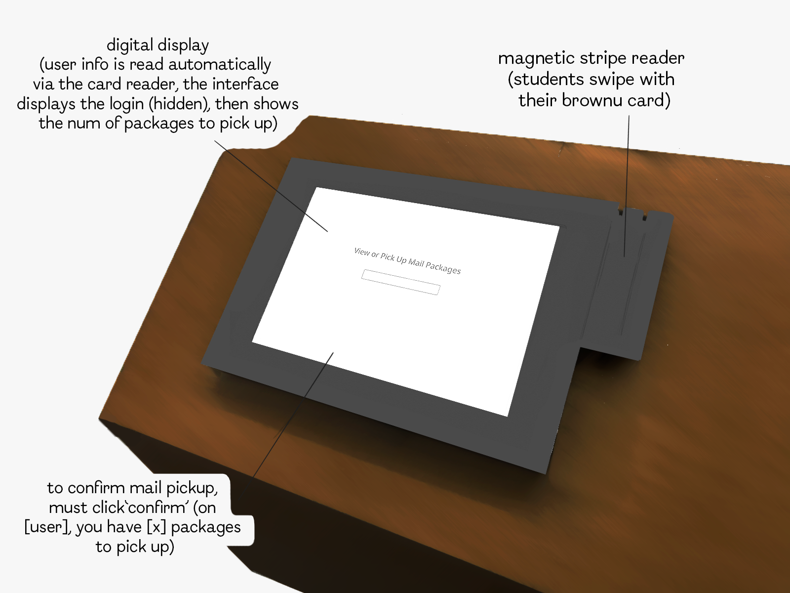

...Questions asked...
Which year are you in?
What was your first experience with the kiosk like?
Nowadays, how often do you use the kiosk?
How important is time efficiency to you when picking up packages?
How simple or complex do you find the process of using the kiosk?
How intuitive do you find the layout and options on the screen?
Do you encounter any difficulties while using it?
Would you prefer this over a cashier? Why or why not?

2. Observations
- Users often struggled to find the produce search function.
- Many users hesitated when inserting cash or scanning coupons.
- Some users expressed frustration at slow response times on the screen.
- People with more items found it difficult to manage bagging and payment simultaneously.
3. Personas
Persona 1: Efficient Emma
Headline: Time-conscious shopper who values speed and efficiency.
Interface Problems: Frustrated by slow response times and unclear navigation.
Empathy Map:
- Thinks: "I hope this is fast — I have places to be."
- Feels: Impatient and annoyed when delays occur.
- Says: "Why is this taking so long?"
- Does: Taps screen quickly, often makes mistakes due to rushing.
Persona 2: Careful Carl
Headline: Detail-oriented shopper who prefers accuracy over speed.
Interface Problems: Struggles with unclear button labels and slow screen feedback.
Empathy Map:
- Thinks: "I don’t want to make any mistakes."
- Feels: Anxious about getting the total and product list right.
- Says: "Let me double-check this."
- Does: Moves slowly, checks each item carefully.
4. Storyboard
Persona: Efficient Emma